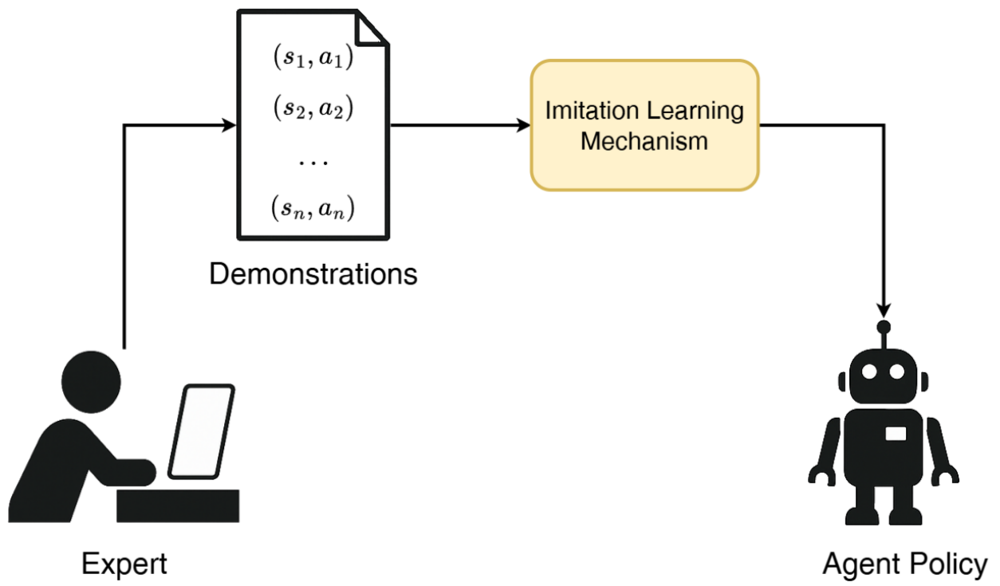

Robot Learning
Welcome!
A quick introduction before behaviour cloning, ACT, and diffusion policy.
Imitation learning is a technique that is widely used in robotics. Due to its simplicity and efficiency, it is very popular among roboticists and researchers.

Before Starting
A few things that are good to know before starting:
- Machine learning architectures, especially transformers
- Probability, especially Gaussian distributions
- Matrix basics